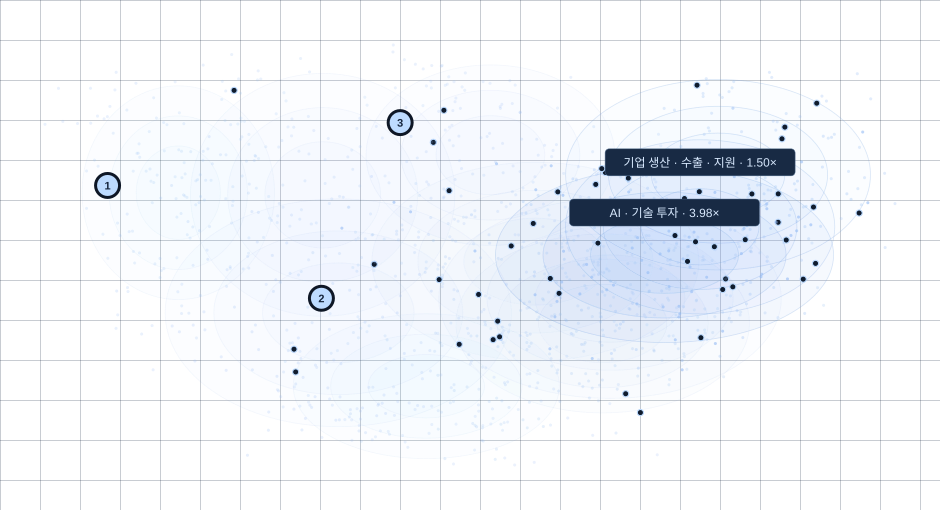
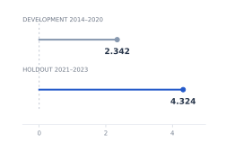
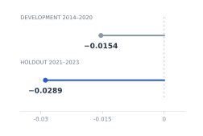
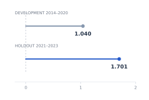

예측하기 어려운 단어
Surprisal 증가와 낮은 베타 대역의 감소가 연결됐습니다.
LLM·뇌파·시선추적을 활용해 언어 처리를 연구했습니다. 금융뉴스의 정보량을 분석하고, 자산 관련 뉴스 탐색 도구를 개발하고 있습니다.
주요 연구·프로젝트 ↓ LANGUAGE → MODEL → HUMAN SIGNALS
LANGUAGE → MODEL → HUMAN SIGNALS언어의 정보량과 인간의 인지적 부하

ATTENTION & ASSET CONNECTIONS관심 분포와 자산 연결 기반 뉴스 탐색
언어·인지 연구
2025 · KCI · 제1저자LLM × EEG × EYE TRACKING
언어 모델로 계산한 단어 수준의 정보이론 지표와 읽기 중 뇌파·시선 반응의 관계를 분석했습니다.
Surprisal은 관측한 단어의 의외성을, Entropy는 다음 단어의 불확실성을, Entropy Reduction은 단어를 읽은 뒤 줄어든 불확실성을 나타냅니다.
ZuCo 데이터를 활용해 시선 고정 시점에 뇌파를 정렬하고, 선형혼합효과모형으로 언어 지표와 신경 반응의 관계를 살폈습니다.

Surprisal 증가와 낮은 베타 대역의 감소가 연결됐습니다.
Entropy 증가와 좌반구의 광대역 증가가 연결됐습니다.
좌반구의 높은 베타·감마 대역 증가와의 관계를 관찰했습니다.
그림은 낮은·높은 베타 대역 결과를 보여줍니다. 관찰된 연관성을 인과관계로 해석하지 않습니다.
이 연구에서 사용한 정보이론 지표를 금융뉴스 분석에 적용하고, Attention Compass에서는 정보 선택 성향을 모델링했습니다.
「대규모 언어 모델 기반 정보 이론적 복잡도 지표와 언어 처리의 신경 상관성」, 『언어』 50(2), 573–595. 2025.06 · 제1저자.
Attention Compass
개인 프로젝트 · v0.40사용자의 관심 성향과 기사·자산 연결을 분석해,
관심이 낮은 영역의 관련 기사를 제시합니다.
실제 v0.40 엔진에서 계산한 3가지 가상 관심형 · 고정된 과거 기사 스냅샷
전체 데모 열기 ↗DESIGN & VALIDATION
이전 버전에서 드러난 사건 해석과 연결 판정의 오류를 검토한 뒤, 최신 버전은 기사를 먼저 보고 확인 가능한 연결만 통과시키는 구조로 정리했습니다.
개인 프로젝트 · 문제 정의, 검증 기준과 화면 설계, AI 코딩 도구를 활용한 구현·반복 개선.
768차원 기사 임베딩과 다중 관심 프로토타입, Bradley–Terry 선택 모델로 상대 관심 성향과 저노출 후보를 계산합니다.
공식 상품 자료·구성종목의 명칭과 기사 속 표현을 연결합니다. 관심 점수만으로 자산 연결을 추정하지 않습니다.
연결·품질·검토 범주·신규성 필터 이후 최대 3개를 제시합니다. 현재 제공 범위는 로컬 v1 후보이며, 공개 데모는 저장된 결과를 전환합니다. 실시간 분석이나 투자성과·사용자 효용을 검증한 서비스는 아닙니다.
금융뉴스 연구
2026 · SSRN · 단독저자CONTEXTUAL SURPRISAL × MARKET RESPONSE
뉴스가 부정적인지뿐 아니라, 최근 보도 흐름에서 얼마나 예상 밖인지를 함께 측정했습니다. 이 지수가 전일보다 증가한 날에는 VIX 상승, SPY 수익률 하락, 비정상 거래대금 증가가 함께 나타났습니다.
개발 기간 2014–2020 · 별도 검증 기간 2021–2023



MEASUREMENT
같은 부정적 뉴스도 최근 반복된 내용인지, 기존 흐름에서 벗어난 내용인지에 따라 정보량이 다릅니다. Qwen은 최근 10일 뉴스 문맥에서의 의외성을, FinBERT는 동일 헤드라인의 긍정·부정 성향을 계산합니다.
두 점수를 기사별로 결합하고, 각 기사가 대표하는 뉴스 군집의 비중으로 가중합했습니다.
시장 분석에는 지수 자체가 아닌 전일 대비 변화량 ΔBt = Bt − Bt−1을 사용했습니다.
SIjt = (1 / |Ejt|) ∑k∈Ejt −log₂ Pθ(wjtk | wjt,<k, Ct)
직전 10일의 대표 헤드라인을 문맥 C로 사용하고, 대상 헤드라인의 내용 토큰에 대한 평균 의외성을 구했습니다. 첫 대상 서브워드는 입력에는 남기되 평균 계산에서 제외했습니다.
Yt = α + βΔBt + ρYt−1 + γ ln Nt + δ′Dt + εt
전일 시장 지표, 당일 뉴스 수, 요일을 통제했습니다. Newey–West 표준오차와 지표별 20개 검정에 대한 Benjamini–Hochberg 보정을 적용했습니다.
| 시장 지표 | 2014–2020 | 2021–2023 |
|---|---|---|
| VIX 변화 | 5.00 × 10⁻⁵ | 2.63 × 10⁻⁴ |
| SPY 로그수익률 | 1.57 × 10⁻⁶ | 1.30 × 10⁻¹¹ |
| 비정상 로그거래대금 | 6.96 × 10⁻⁴ | 1.97 × 10⁻⁵ |
감성의 방향에 문맥적 의외성을 결합해, 반복적인 부정 보도와 예상 밖의 부정 보도를 구분했습니다. 같은 방향의 시장 관계가 시간적으로 분리된 검증 기간에서도 확인됐습니다.
확인된 것은 당일의 연관성입니다. 기사 시각이 없는 일별 자료이므로 뉴스가 시장보다 먼저 움직였는지, 매매에 활용할 수 있는지는 별도 검증이 필요합니다.
SSRN · 2026.08 · 단독저자
MORE RESEARCH / 2023–2025
독일어 L2 학습자의 문맥·부정문 처리를 시선추적으로 살폈습니다. 24명 대상의 2×2 설계에서 문맥이 어긋날 때 후기 재독이 증가하는 양상을 분석했습니다.
「한국인 독일어 L2 학습자의 전제 처리 양상에 대한 시선 추적 연구」 · 『독어학』 51, 25–49 · 2025.06 · 제1저자.
「한국어 술어은유처리에 관한 다층 연구: Surprisal과 뇌신경학적 증거」 · 한국언어정보학회 가을학술대회 · 2023.11 · 단독 발표. ERP와 GPT Surprisal을 함께 분석했습니다.
ABOUT / 김건
한양대학교에서 독어독문학을 전공하고, 석사과정에서 심리·신경언어학을 연구했습니다. 주요 관심 분야는 언어 모델을 활용한 정보 분석과 금융 AI 서비스 기획입니다.
GitHub ↗연락처는 지원 시 제출한 이력서에서 확인하실 수 있습니다.
참여자 모집과 일정, 프로토콜·매뉴얼을 관리했습니다. 연간 약 200명 규모의 국책과제 데이터 수집·전처리·DB 관리를 담당했습니다.
독어독문학 학사 · 영어영문학 부전공 · 2023.08
독어독문학 석사 · 심리·신경언어학 연구 · 2026.02
Python · R · SQL · 통계분석 · EEG · Eye Tracking · NLP / LLM
투자자산운용사 · ADsP · SQLD · AWS Certified AI Practitioner